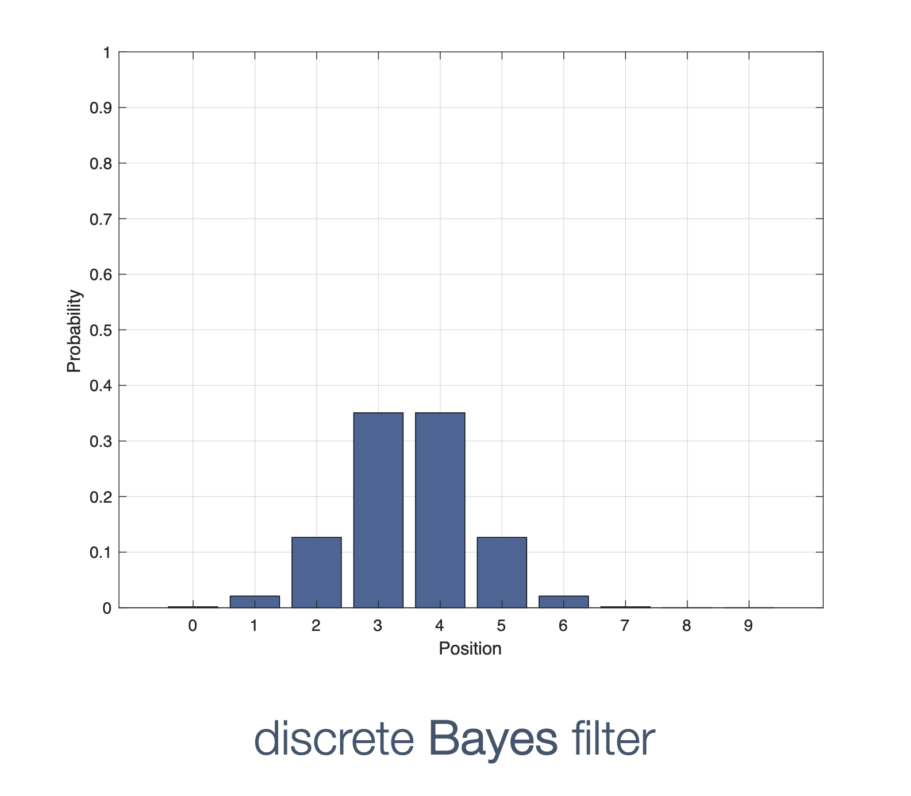
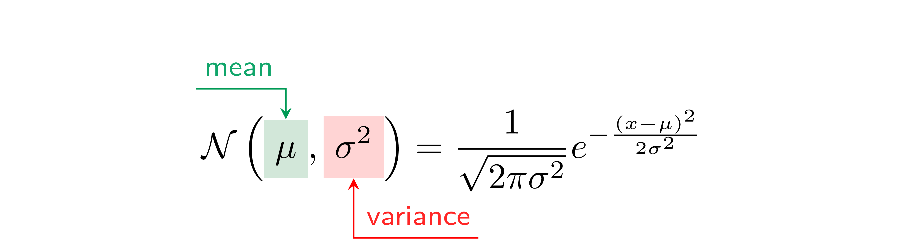
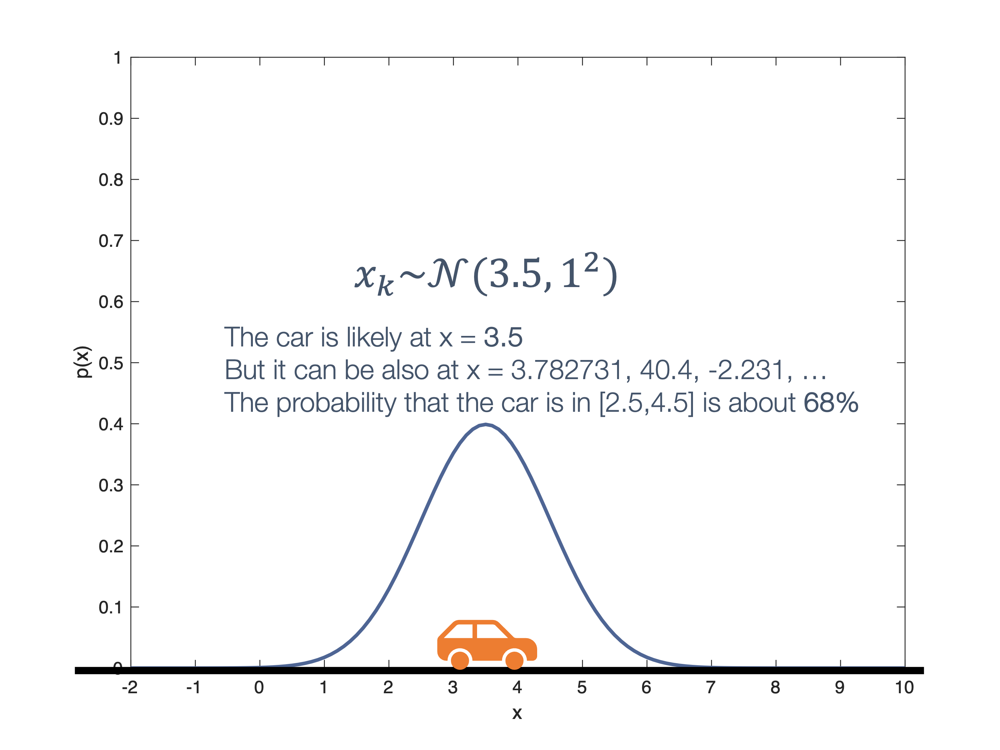
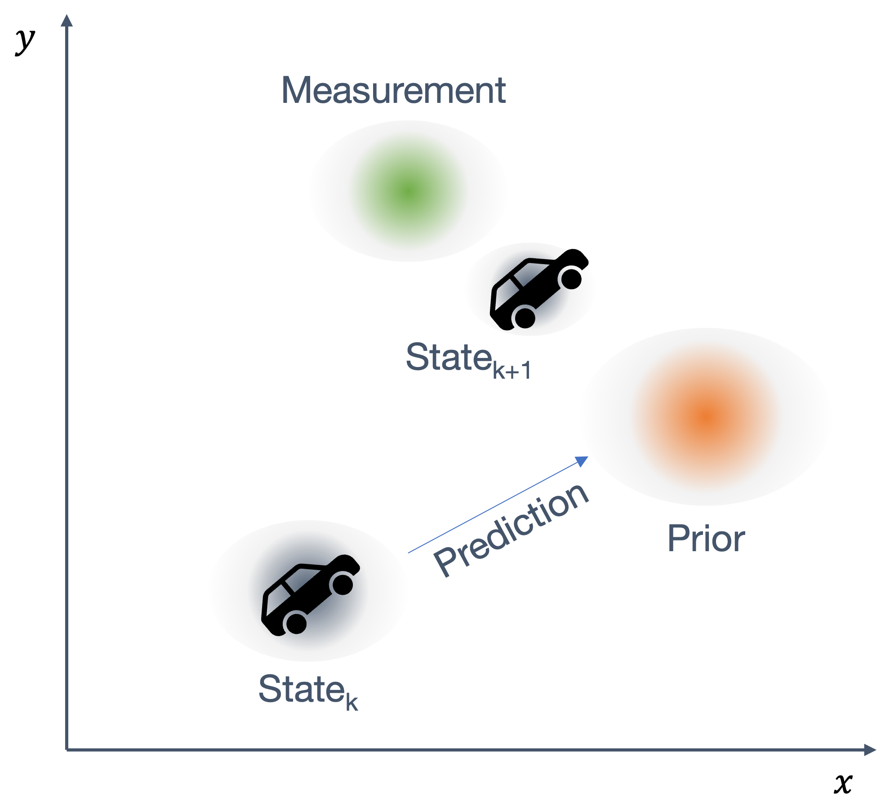
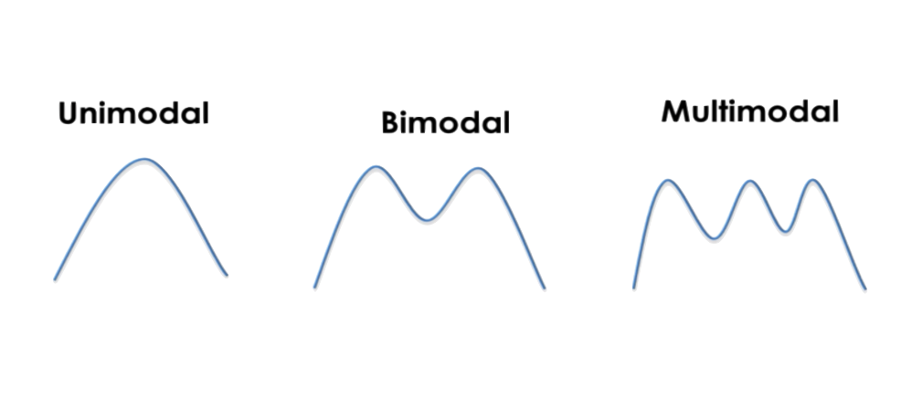
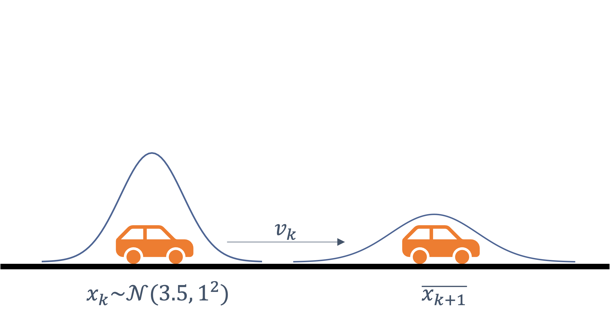
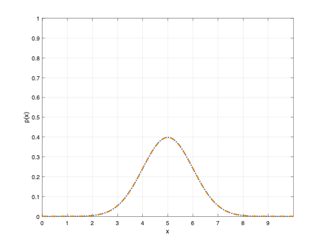

# Kalman Filter ## **Design of Autonomous Systems** ### csci 6907/4907-Section 86 ### Prof. **Sibin Mohan** --- **Kalman Filter** express state and uncertainty → **Gaussians** distributions --- <!-- .slide: data-background="white" --> ### kalman filters and gaussians  <img src="img/ekf/kalman/kalman_gaussian.png" width="700"> --- ### Gaussian Distribution --- ### Gaussian Distribution **continuous probability distribution** --- ### Gaussian Distribution **continuous probability distribution** → **real-valued random variable** --- ### Gaussian Distribution **continuous probability distribution** → **real-valued random variable** <br> $$ \mathcal{N}\left(\mu, \sigma^{2}\right)=\frac{1}{\sqrt{2 \pi \sigma^{2}}} e^{-\frac{(x-\mu)^{2}}{2 \sigma^{2}}} $$ --- ### Gaussian Distribution **continuous probability distribution** → **real-valued random variable**  --- ### Gaussian Distribution a very common Gaussian: <img src="img/ekf/kalman/normal_distribution_wiki.svg" width="1400"> --- ### Gaussian Distribution a very common Gaussian: <div class="multicolumn"> <div> <br> </div> <div> <img src="img/ekf/kalman/normal_distribution_wiki.svg" width="1400"> </div> </div> --- ### Gaussian Distribution **variance** ($\sigma^2$) → captures the **uncertainty** in system --- ### Gaussian Distribution **variance** ($\sigma^2$) → captures the **uncertainty** in system the **square** of standard deviation ($\sigma$) --- various types of "uncertainty" <img src="img/ekf/kalman/variance_uncertainty_examples.png" width="1400"> --- more specific examples: <img src="img/ekf/kalman/uncertainty.1.png" width="500"> <img src="img/ekf/kalman/uncertainty.2.png" width="500"> <img src="img/ekf/kalman/uncertainty.3.png" width="500"> --- ### some properties of Gaussians --- ### some properties of Gaussians 1. **area** under curve = <scb>1</scb> Note: - any guesses why? --- ### some properties of Gaussians 1. **area** under curve = <scb>1</scb> (since it is the sum of all the probabilities) --- ### some properties of Gaussians 1. **area** under curve = <scb>1</scb> $$ area = \int_{-\infty}^{+\infty} \mathcal{N}\left(\mu, \sigma^{2}\right) $$ --- $$ area = \int_{-\infty}^{+\infty} \mathcal{N}\left(\mu, \sigma^{2}\right) $$ - curve approaches **infinity** ($\infty$) on **either side** - the probability of certain events is **never** <scb>0</scb> → no matter how small! --- ### some properties of Gaussians 1. **area** under curve = <scb>1</scb> $$ area = \int_{-\infty}^{+\infty} \frac{1}{\sqrt{2 \pi \sigma^{2}}} e^{-\frac{(x-\mu)^{2}}{2 \sigma^{2}}} = \textbf{1} $$ --- ### some properties of Gaussians 2. probability that a value, $x$ → is in a **range**, $(a,b)$: $$ \operatorname{Pr}(a \leq x \leq b)=\int_{a}^{b} \frac{1}{\sqrt{2 \pi \sigma^{2}}} e^{-\frac{(x-\mu)^{2}}{2 \sigma^{2}}} d x $$ --- ### some properties of Gaussians 3. probability **within one standard deviation** (on either side), $$ \operatorname{Pr}(\mu-\sigma \leq x \leq \mu+\sigma)=\int_{\mu-\sigma}^{\mu+\sigma} \frac{1}{\sqrt{2 \pi \sigma^{2}}} e^{-\frac{(x-\mu)^{2}}{2 \sigma^{2}}} d x \approx \textbf{68 \%} $$ --- ### some properties of Gaussians 4. **sum** and **product** of two Gaussian distributions → **easy** to calculate --- given, two Gaussians, $X_{1} \sim \mathcal{N}\left(\mu_{1}, \sigma_{1}^{2}\right)$ $X_{2} \sim \mathcal{N}\left(\mu_{2}, \sigma_{2}^{2}\right) $ --- ### sum and product of Gaussians |result| sum | | |------|-----|--------| | **new** Gaussian, $Z \sim \mathcal{N}\left(\mu, \sigma^{2}\right)$ | $Z=X_{1}+X_{2}$ | | --- ### sum and product of Gaussians |result| sum | | |------|-----|--------| | **new** Gaussian, $Z \sim \mathcal{N}\left(\mu, \sigma^{2}\right)$ | $Z=X_{1}+X_{2}$ | | | new **mean**, $\mu$ | $\mu_{1}+\mu_{2}$ | | --- ### sum and product of Gaussians |result| sum | | |------|-----|--------| | **new** Gaussian, $Z \sim \mathcal{N}\left(\mu, \sigma^{2}\right)$ | $Z=X_{1}+X_{2}$ | | | new **mean**, $\mu$ | $\mu_{1}+\mu_{2}$ | | | new **variance**, $\sigma^{2}$ | $\sigma_{1}^{2}+\sigma_{2}^{2}$ | | --- ### sum and product of Gaussians |result| sum | product| |------|-----|--------| | **new** Gaussian, $Z \sim \mathcal{N}\left(\mu, \sigma^{2}\right)$ | $Z=X_{1}+X_{2}$ | | | new **mean**, $\mu$ | $\mu_{1}+\mu_{2}$ | | | new **variance**, $\sigma^{2}$ | $\sigma_{1}^{2}+\sigma_{2}^{2}$ | | || --- ### sum and product of Gaussians |result| sum | product| |------|-----|--------| | **new** Gaussian, $Z \sim \mathcal{N}\left(\mu, \sigma^{2}\right)$ | $Z=X_{1}+X_{2}$ | $Z=X_{1} X_{2}$ | | new **mean**, $\mu$ | $\mu_{1}+\mu_{2}$ | | | new **variance**, $\sigma^{2}$ | $\sigma_{1}^{2}+\sigma_{2}^{2}$ | | || --- ### sum and product of Gaussians |result| sum | product| |------|-----|--------| | **new** Gaussian, $Z \sim \mathcal{N}\left(\mu, \sigma^{2}\right)$ | $Z=X_{1}+X_{2}$ | $Z=X_{1} X_{2}$ | | new **mean**, $\mu$ | $\mu_{1}+\mu_{2}$ | $\mu=\frac{\sigma_{2}^{2} \mu_{1}+\sigma_{1}^{2} \mu_{2}}{\sigma_{1}^{2}+\sigma_{2}^{2}}$ | | new **variance**, $\sigma^{2}$ | $\sigma_{1}^{2}+\sigma_{2}^{2}$ | | || --- ### sum and product of Gaussians |result| sum | product| |------|-----|--------| | **new** Gaussian, $Z \sim \mathcal{N}\left(\mu, \sigma^{2}\right)$ | $Z=X_{1}+X_{2}$ | $Z=X_{1} X_{2}$ | | new **mean**, $\mu$ | $\mu_{1}+\mu_{2}$ | $\mu=\frac{\sigma_{2}^{2} \mu_{1}+\sigma_{1}^{2} \mu_{2}}{\sigma_{1}^{2}+\sigma_{2}^{2}}$ | | new **variance**, $\sigma^{2}$ | $\sigma_{1}^{2}+\sigma_{2}^{2}$ | $\sigma^{2}=\frac{\sigma_{1}^{2} \sigma_{2}^{2}}{\sigma_{1}^{2}+\sigma_{2}^{2}}$ | || --- ### some properties of Gaussians 5. **closure** under **linear transformations** --- ### some properties of Gaussians 5. **closure** under **linear transformations** linear transformation on Gaussian → **result remains a Gaussian**! --- ### some properties of Gaussians 5. **closure** under **linear transformations** ensures that Kalman Filter equations remain, - elegant and - manageable --- ### **State** in Kalman Filter --- ### **State** in Kalman Filters  --- **prior** ↔ **measurement** ↔ **update** process --- <!-- .slide: data-background="white" --> **prior** ↔ **measurement** ↔ **update** process  --- <!-- .slide: data-background="white" --> prediction and measurements → not single points → **distributions** --- ### Kalman Filter | **transitions** <img src="img/ekf/kalman/kalman.final.png" width="1000"> similar to Bayes Filter → each edge is now **probabilistic Gaussian value** --- ### Kalman Filter | **Prediction** --- **process model** * is also a Gaussian! [*_i.e.,_ model of how system evolves over time → physics model] --- **process model** * is also a Gaussian! equations of motion → _velocity_ follows a Gaussian distribution --- we want to track motion of car <img src="img/ekf/kalman/kalman.predict.1.png" width="900"> --- <img src="img/ekf/kalman/kalman.predict.1.png" width="900"> **predict** next state using following **process model**: $$ \overline{x_{k+1}}=x_{k} +v_{k} \Delta t $$ [Newton's laws of motion] --- $$ \overline{x_{k+1}}=x_{k} +v_{k} \Delta t $$ |variable | description |---------|-----------| | $x_{k}$ | current state | --- $$ \overline{x_{k+1}}=x_{k} +v_{k} \Delta t $$ |variable | description |---------|-----------| | $x_{k}$ | current state | | $x_{k+1}$ | **predicted** next state | --- $$ \overline{x_{k+1}}=x_{k} +v_{k} \Delta t $$ |variable | description |---------|-----------| | $x_{k}$ | current state | | $x_{k+1}$ | **predicted** next state | | **$v_{k}$** | velocity| --- $$ \overline{x_{k+1}}=x_{k} +v_{k} \Delta t $$ |variable | description |---------|-----------| | $x_{k}$ | current state | | $x_{k+1}$ | **predicted** next state | | **$v_{k}$** | velocity| | $\Delta t$ | time difference | || --- velocity → Gaussian distribution --- velocity → Gaussian distribution $$ v_{k} \sim \mathcal{N} \left(3 m / \mathrm{s}, 1^{2} m^2/s^2 \right) $$ --- **current** state, $x_k$ → Gaussian <img src="img/ekf/kalman/kalman.predict.3.png" width="1000"> --- **predicted** state, $x_{k+1}$ → Gaussian * <img src="img/ekf/kalman/kalman.predict.4.png" width="1000"> (* both current state **and** velocity are Gaussians) --- $$ \overline{x_{k+1}} \sim \mathcal{N}\left(\pmb{?}\ \mathrm{m}, \pmb{?}\ \mathrm{m}^{2}\right) $$ --- recall, that **sum** of two Gaussians is, $$ \mu =\mu_{1}+\mu_{2} $$ $$ \sigma^{2} =\sigma_{1}^{2}+\sigma_{2}^{2} $$ --- assume $\Delta t = 1s$, --- assume $\Delta t = 1s$, $$ \overline{x_{k+1}} \sim \mathcal{N}\left(6.5 \mathrm{m}, 2 \mathrm{m}^{2}\right) $$ --- assume $\Delta t = 1s$, $$ \overline{x_{k+1}} \sim \mathcal{N}\left(6.5 \mathrm{m}, 2 \mathrm{m}^{2}\right) $$ <img src="img/ekf/kalman/kalman.predict.5.png" width="1000"> --- <img src="img/ekf/kalman/kalman.predict.6.png" width="900"> --- Kalman Filter → **unimodel** * --- Kalman Filter → **unimodel** * (* a **single peak** each time) --- Kalman Filter → **unimodel** *  (* a **single peak** each time) --- Kalman Filter → **unimodel** * --- Kalman Filter → **unimodel** * an obstacle is --- Kalman Filter → **unimodel** * an obstacle is <div class="multicolumn"> <div> **not** both, - $10m$ away (<scb>90%</scb> prob.) **and** - $8m$ away (<scb>70%</scb> prob.) </div> <div> </div> </div> --- Kalman Filter → **unimodel** * an obstacle is <div class="multicolumn"> <div> **not** both, - $10m$ away (<scb>90%</scb> prob.) **and** - $8m$ away (<scb>70%</scb> prob.) </div> <div> <br> - *$9.7m$* away, <scb>98%</scb> prob. or - **nothing** </div> </div> Note: - this is from the viewpoint of a sngle sensor, state model --- ### Kalman Filter | **Prediction** --- ### Kalman Filter | **Prediction** some examples → consider following velocity models: ||| |----|----| | **A** | $$v_{k} \sim \mathcal{N}\left(3 \mathrm{m} / \mathrm{s}, 0^{2} \mathrm{m}^{2} / \mathrm{s}^{2}\right)$$ | **B** | $$v_{k} \sim \mathcal{N}\left(3 \mathrm{m} / \mathrm{s}, 1^{2} \mathrm{m}^{2} / \mathrm{s}^{2}\right)$$ | **C** | $$v_{k} \sim \mathcal{N}\left(3 \mathrm{m} / \mathrm{s}, 2^{2} \mathrm{m}^{2} / \mathrm{s}^{2}\right)$$ || --- the following **predicted** states: <br> <img src="img/ekf/kalman/kalman.predict.8.png" width="700"><br> <img src="img/ekf/kalman/kalman.predict.9.png" width="700"> --- |prediction| velocity model| |-----|----| | | <br> **A**, **B** or **C** ? | | <img src="img/ekf/kalman/kalman.predict.8.png" width="700"> | **A**, **B** or **C** ? | | <img src="img/ekf/kalman/kalman.predict.9.png" width="700"> | **A**, **B** or **C** ? | || --- <div class="multicolumn"> <div> <br> ||| |----|----| | **A** | $$v_{k} \sim \mathcal{N}\left(3 \mathrm{m} / \mathrm{s}, 0^{2} \mathrm{m}^{2} / \mathrm{s}^{2}\right)$$ | **B** | $$v_{k} \sim \mathcal{N}\left(3 \mathrm{m} / \mathrm{s}, 1^{2} \mathrm{m}^{2} / \mathrm{s}^{2}\right)$$ | **C** | $$v_{k} \sim \mathcal{N}\left(3 \mathrm{m} / \mathrm{s}, 2^{2} \mathrm{m}^{2} / \mathrm{s}^{2}\right)$$ || </div> <div> <img src="img/ekf/kalman/kalman.predict.8.png" width="700"> <img src="img/ekf/kalman/kalman.predict.9.png" width="700"> </div> </div> --- |prediction| velocity model| |-----|----| | | $v_{k} \sim \mathcal{N}\left(3 \mathrm{m} / \mathrm{s}, 1^{2} \mathrm{m}^{2} / \mathrm{s}^{2}\right)$ [**B**] | | <img src="img/ekf/kalman/kalman.predict.8.png" width="500"> | $v_{k} \sim \mathcal{N}\left(3 \mathrm{m} / \mathrm{s}, 0^{2} \mathrm{m}^{2} / \mathrm{s}^{2}\right)$ [**A**]| | <img src="img/ekf/kalman/kalman.predict.9.png" width="500"> | $v_{k} \sim \mathcal{N}\left(3 \mathrm{m} / \mathrm{s}, 2^{2} \mathrm{m}^{2} / \mathrm{s}^{2}\right)$ [**C**]| || --- what does **predicted** state look like? --- |prediction| velocity model| predicted state | |-----|----|------| | | $v_{k} \sim \mathcal{N}\left(3 \mathrm{m} / \mathrm{s}, 1^{2} \mathrm{m}^{2} / \mathrm{s}^{2}\right)$ | $\overline{x_{k+1}} \sim \mathcal{N}\left(6.5 \mathrm{m}, ? \mathrm{m}^{2}\right)$| | <img src="img/ekf/kalman/kalman.predict.8.png" width="500"> | $v_{k} \sim \mathcal{N}\left(3 \mathrm{m} / \mathrm{s}, 0^{2} \mathrm{m}^{2} / \mathrm{s}^{2}\right)$ | $\overline{x_{k+1}} \sim \mathcal{N}\left(6.5 \mathrm{m}, ? \mathrm{m}^{2}\right)$| | <img src="img/ekf/kalman/kalman.predict.9.png" width="500"> | $v_{k} \sim \mathcal{N}\left(3 \mathrm{m} / \mathrm{s}, 2^{2} \mathrm{m}^{2} / \mathrm{s}^{2}\right)$ | $\overline{x_{k+1}} \sim \mathcal{N}\left(6.5 \mathrm{m}, ? \mathrm{m}^{2}\right)$| || --- what does **predicted** state look like? |prediction| velocity model| predicted state | |-----|----|------| | | $v_{k} \sim \mathcal{N}\left(3 \mathrm{m} / \mathrm{s}, 1^{2} \mathrm{m}^{2} / \mathrm{s}^{2}\right)$ | | | <img src="img/ekf/kalman/kalman.predict.8.png" width="300"> | $v_{k} \sim \mathcal{N}\left(3 \mathrm{m} / \mathrm{s}, 0^{2} \mathrm{m}^{2} / \mathrm{s}^{2}\right)$ | | | <img src="img/ekf/kalman/kalman.predict.9.png" width="300"> | $v_{k} \sim \mathcal{N}\left(3 \mathrm{m} / \mathrm{s}, 2^{2} \mathrm{m}^{2} / \mathrm{s}^{2}\right)$ | | || --- **recall**, $\overline{x_{k}} \sim \mathcal{N}\left(3.5, 1^{2}\right)$ <br> $\mu =\mu_{1}+\mu_{2}$ and $\sigma^{2} =\sigma_{1}^{2}+\sigma_{2}^{2}$ |prediction| velocity model| predicted state | |-----|----|------| | | $v_{k} \sim \mathcal{N}\left(3 \mathrm{m} / \mathrm{s}, 1^{2} \mathrm{m}^{2} / \mathrm{s}^{2}\right)$ | | | <img src="img/ekf/kalman/kalman.predict.8.png" width="300"> | $v_{k} \sim \mathcal{N}\left(3 \mathrm{m} / \mathrm{s}, 0^{2} \mathrm{m}^{2} / \mathrm{s}^{2}\right)$ | | | <img src="img/ekf/kalman/kalman.predict.9.png" width="300"> | $v_{k} \sim \mathcal{N}\left(3 \mathrm{m} / \mathrm{s}, 2^{2} \mathrm{m}^{2} / \mathrm{s}^{2}\right)$ | | || --- |prediction| velocity model| predicted state | |-----|----|------| | | $v_{k} \sim \mathcal{N}\left(3 \mathrm{m} / \mathrm{s}, 1^{2} \mathrm{m}^{2} / \mathrm{s}^{2}\right)$ | $\overline{x_{k+1}} \sim \mathcal{N}\left(6.5 \mathrm{m}, 2 \mathrm{m}^{2}\right)$| | <img src="img/ekf/kalman/kalman.predict.8.png" width="300"> | $v_{k} \sim \mathcal{N}\left(3 \mathrm{m} / \mathrm{s}, 0^{2} \mathrm{m}^{2} / \mathrm{s}^{2}\right)$ | $\overline{x_{k+1}} \sim \mathcal{N}\left(6.5 \mathrm{m}, 1 \mathrm{m}^{2}\right)$| | <img src="img/ekf/kalman/kalman.predict.9.png" width="300"> | $v_{k} \sim \mathcal{N}\left(3 \mathrm{m} / \mathrm{s}, 2^{2} \mathrm{m}^{2} / \mathrm{s}^{2}\right)$ | $\overline{x_{k+1}} \sim \mathcal{N}\left(6.5 \mathrm{m}, 5 \mathrm{m}^{2}\right)$| || --- depending on **noise** in intial Gaussian → **uncertainty increases** even when velocity model had <scb>0</scb> noise! --- **problem** → don't know how **close** our prediction is to reality --- **problem** → don't know how **close** our prediction is to reality we need an **update** step → measurements! --- ### Kalman Filter | **Update** --- ### Kalman Filter | **Update** **measurement uncertainty** (aka "likelihood") → also Gaussian --- ### Kalman Filter | **Update** ${z_{k}} \sim \mathcal{N}\left(\mu, \sigma^2\right)$ --- ### Kalman Filter | **Update** <img src="img/ekf/equations/pngs/equations-2.png" width="1300"> --- ### Kalman Filter | **Update** <img src="img/ekf/equations/pngs/equations-2.png" width="1300"> **example**: current temperature is $72^{\circ} \mathrm{F} \pm 1^{\circ} \mathrm{F}$ --- recall that, $$ posterior = prior \times likelihood $$ --- recall that, $$ posterior = prior \times likelihood $$ $$ posterior = \overline x_k \times z_k $$ --- what does this **actually mean**? --- consider a few examples... --- ### Example **1** | prediction ($\overline x_{k}$) | measurement ($z_k$) | posterior ($\overline x_{k} \times z_k$) | |----------|----------|----------| |$\overline{x_{k}} \sim \mathcal{n}\left(5,1^{2}\right)$ | $z_{k} \sim \mathcal{n}\left(5,1^{2}\right)$ | **?** | || --- let's plot these two Gaussians,  --- perfectly aligned → **same** distribution! --- | prediction ($\overline x_{k}$) | measurement ($z_k$) | posterior ($\overline x_{k} \times z_k$) | |----------|----------|----------| |$\overline{x_{k}} \sim \mathcal{N}\left(5,1^{2}\right)$ | $z_{k} \sim \mathcal{N}\left(5,1^{2}\right)$ | **?** | || what is $\overline{x_{k}} \times z_{k}$? --- recall **product** of Gaussians, $$ \mu =\frac{\sigma_{2}^{2} \mu_{1}+\sigma_{1}^{2} \mu_{2}}{\sigma_{1}^{2}+\sigma_{2}^{2}} \\ $$ $$ \sigma^{2} =\frac{\sigma_{1}^{2} \sigma_{2}^{2}}{\sigma_{1}^{2}+\sigma_{2}^{2}} $$ --- hence, the **posterior**: | prediction ($\overline x_{k}$) | measurement ($z_k$) | posterior ($\overline x_{k} \times z_k$) | |----------|----------|----------| |$\overline{x_{k}} \sim \mathcal{N}\left(5,1^{2}\right)$ | $z_{k} \sim \mathcal{N}\left(5,1^{2}\right)$ | $\overline{x_k} \times z_k \sim \mathcal{N}(5,0.5)$ | || --- graphically, <img src="img/ekf/kalman/kalman.update.4.png" width="1100"> --- <img src="img/ekf/kalman/kalman.update.4.png" width="1100"> - an **increase** in the probability around <scb>5</scb> (**taller** Gaussian) --- <img src="img/ekf/kalman/kalman.update.4.png" width="1100"> - an **increase** in the probability around <scb>5</scb> (**taller** Gaussian) - a **decrease** in the uncertainty (**narrower** Gaussian) --- ### Example **2** --- ### Example **2** this time the initial Guassians differ slightly, --- ### Example **2** this time the initial Guassians differ slightly, | prediction ($\overline x_{k}$) | measurement ($z_k$) | posterior ($\overline x_{k} \times z_k$) | |----------|----------|----------| |$\overline{x_{k}} \sim \mathcal{N}\left(5,1^{2}\right)$ | $z_{k} \sim \mathcal{N}\left(5.4,1^{2}\right)$ | $\overline{x_k} \times {z_{k}} \sim \mathcal{N}(5.2,0.5)$ | || --- result: <img src="img/ekf/kalman/kalman.update.5.png" width="1100"> --- <img src="img/ekf/kalman/kalman.update.5.png" width="1100"> result → in the **midddle** of two original Gaussians --- ### Example **3** the Gaussian's differ **significantly**, _i.e.,_ | prediction ($\overline x_{k}$) | measurement ($z_k$) | posterior ($\overline x_{k} \times z_k$) | |----------|----------|----------| |$\overline{x_{k}} \sim \mathcal{N}\left(4,1^{2}\right)$ | $z_{k} \sim \mathcal{N}\left(6,0.5^{2}\right)$ | $\overline{x_{k}} \times z_{k} \sim \mathcal{N}(?,?)$ | || --- original Gaussians: --- post update → resultant distribution, | prediction ($\overline x_{k}$) | measurement ($z_k$) | posterior ($\overline x_{k} \times z_k$) | |----------|----------|----------| |$\overline{x_{k}} \sim \mathcal{N}\left(4,1^{2}\right)$ | $z_{k} \sim \mathcal{N}\left(6,0.5^{2}\right)$ | $\overline{x_{k}} \times z_{k}\sim \mathcal{N}(5.6,0.2)$ | || --- <div class="multicolumn"> <div> **before** update </div> <div> **after** update </div> </div> --- - **more weight → more ‘certain’ information** --- - more weight → more ‘certain’ information - **measurement** (in this case) → has a higher+narrower Gaussian --- ### **posterior** - **between** prediction ($\overline x_{k}$) and measurement ($z_k$) --- ### **posterior** - between prediction ($\overline x_{k}$) and measurement ($z_k$) - closer to **more certain side** → based on variances --- ### **posterior** - between prediction ($\overline x_{k}$) and measurement ($z_k$) - closer to **more certain side** → based on the variances - so, a ‘**weighted average**’ --- ### **posterior** <div class="multicolumn"> <div> <br> <br> - between prediction ($\overline x_{k}$) and measurement ($z_k$) - closer to **more certain side** → based on the variances - so, a ‘**weighted average**’ </div> <div> </div> </div> --- <!-- .slide: data-background="white" --> a more **detailed example** --- <!-- .slide: data-background="white" --> actual position vs measurements --- <!-- .slide: data-background="white" --> **after Kalman Filter is applied** <img src="img/ekf/kalman/kalman.posterior_example.3.png" width="900"> --- <!-- .slide: data-background="white" --> **after Kalman Filter is applied** <img src="img/ekf/kalman/kalman.posterior_example.3.png" width="900"> 1. posterior → **always between** prior and measurement 2. posterior is **closer to** measurement → sensor noise is small --- look at [textbook](https://autonomy-course.github.io/textbook/autonomy-textbook.html#kalman-filter) for more detailed examples --- ### kalman filter | **update** step --- ### kalman filter | **update** step <img src="img/ekf/kalman/kalman.gain.1.png" width="1100"> --- <!-- .slide: data-background="white" --> ### kalman filter | **update** step <img src="img/ekf/kalman/kalman.gain.1.png" width="900"> <img src="img/ekf/kalman/kalman.gain.2.png" width="900"> --- recall, $$ \begin{aligned} \mu & =\frac{\sigma_{z}^{2} \bar{\mu}+\bar{\sigma}^{2} \mu_{z}}{\bar{\sigma}^{2}+\sigma_{z}^{2}} \newline \end{aligned} $$ --- let's **rewrite** it as, $$ \begin{aligned} \mu & =\frac{\sigma_{z}^{2} \bar{\mu}+\bar{\sigma}^{2} \mu_{z}}{\bar{\sigma}^{2}+\sigma_{z}^{2}} \newline & =K_{1} \mu_{z}+K_{2} \bar{\mu} \newline \end{aligned} $$ --- to **simplify** further, $$ \begin{aligned} \mu & =\frac{\sigma_{z}^{2} \bar{\mu}+\bar{\sigma}^{2} \mu_{z}}{\bar{\sigma}^{2}+\sigma_{z}^{2}} \newline & =K_{1} \mu_{z}+K_{2} \bar{\mu} \newline & =K \mu_{z}+(1-K) \bar{\mu} \end{aligned} $$ --- $$ \begin{aligned} \mu & =\frac{\sigma_{z}^{2} \bar{\mu}+\bar{\sigma}^{2} \mu_{z}}{\bar{\sigma}^{2}+\sigma_{z}^{2}} \newline & =K_{1} \mu_{z}+K_{2} \bar{\mu} \newline & =K \mu_{z}+(1-K) \bar{\mu} \end{aligned} $$ <br> $K_2 = 1-K$ → a simplification --- $K_2 = 1-K$ → a simplification whether posterior → **closer to the prior or the measurement**? --- whether posterior → **closer to the prior or the measurement**? <br> where does it fall on this line? <img src="img/ekf/kalman/kalman.gain.3.png" width="900"> --- ### **Kalman Gain** ($K$) --- ### **Kalman Gain** ($K$) $$ K = \frac{\bar{\sigma}^{2}}{\bar{\sigma}^{2} + \sigma_{z}^{2}} $$ --- ### **Kalman Gain** ($K$) $$ K = \frac{\bar{\sigma}^{2}}{\bar{\sigma}^{2} + \sigma_{z}^{2}} $$ - **how much** measurement is **trusted** --- ### **Kalman Gain** ($K$) $$ K = \frac{\bar{\sigma}^{2}}{\bar{\sigma}^{2} + \sigma_{z}^{2}} $$ - **how much** measurement is **trusted** - **mixing ratio** between measurement and prior --- **example** --- **example** measurement → **three times** more accurate than prior --- **example** measurement → **three times** more accurate than prior what is the Kalman Gain? --- what is the Kalman Gain? $$ \begin{gathered} \bar{\sigma}^{2}=3 \sigma_{z}^{2} \newline \end{gathered} $$ --- what is the Kalman Gain? $$ \begin{gathered} \bar{\sigma}^{2}=3 \sigma_{z}^{2} \newline K=\frac{3 \sigma_{z}^{2}}{3 \sigma_{Z}^{2}+\sigma_{Z}^{2}} \end{gathered} $$ --- what is the Kalman Gain? $$ \begin{gathered} \bar{\sigma}^{2}=3 \sigma_{z}^{2} \newline K=\frac{3 \sigma_{z}^{2}}{3 \sigma_{Z}^{2}+\sigma_{Z}^{2}}=\frac{3}{4} \end{gathered} $$ --- $$ K=\frac{3}{4} $$ --- ### posterior --- ### posterior rewritten as --- ### posterior rewritten as ||| |----|----| | **residual** | $y = \mu_z - \bar{\mu}$| --- ### posterior rewritten as ||| |----|----| | **residual** | $y = \mu_z - \bar{\mu}$| | posterior **mean** | $\mu = \bar{\mu} + Ky$| --- ### posterior rewritten as ||| |----|----| | **residual** | $y = \mu_z - \bar{\mu}$| | posterior **mean** | $\mu = \bar{\mu} + Ky$| | posterior **noise** | $\sigma^2 = (1-K) \bar{\sigma^2}$| || --- ### posterior rewritten as ||| |----|----| | **residual** | $y = \mu_z - \bar{\mu}$| | posterior **mean** | $\mu = \bar{\mu} + Ky$| | posterior **noise** | $\sigma^2 = (1-K) \bar{\sigma^2}$| || (since $\sigma^{2} =\frac{\sigma_{1}^{2} \sigma_{2}^{2}}{\sigma_{1}^{2}+\sigma_{2}^{2}}$) --- ### **higher** K → **more** certainty! --- ### Kalman Filter | **Summary** --- ### Kalman Filter | **Summary** --- ### Kalman Filter | **Summary** <div class="multicolumn"> <div> </div> <div> <br> 1. **step 0**: **initialize** $x_{0} \sim \mathcal{N}\left(\mu_{0}, \sigma_{0}^{2}\right)$ - initial **belief** - reasonable random values/initial measurement </div> </div> --- ### Kalman Filter | **Summary** <div class="multicolumn"> <div> </div> <div> 2. **step 1**: **predict** - calculate **prior**, $\overline{x_{k}} \sim \mathcal{N}\left(\overline{\mu_{k}},{\overline{\sigma_{k}}}^{2}\right)$ - from previous posterior, $x_{k-1} \sim \mathcal{N}\left(\mu_{k-1}, \sigma_{k-1}^{2}\right)$ - incorporating process model, $f_{x} \sim \mathcal{N}\left(\mu_{f}, \sigma_{f}^{2}\right)$ </div> </div> --- ### Kalman Filter | **Summary** <div class="multicolumn"> <div> </div> <div> 3. **step 2**: **update** - given measurement, $z_{k}$ - compute **residual** and **Kalman gain** - set posterior ($x_{k}$) between prior ($\overline{x_k}$) and measurement ($z_{k}$) - based on residual and Kalman gain </div> </div> <br> (see textbook for more details/equations/etc.)